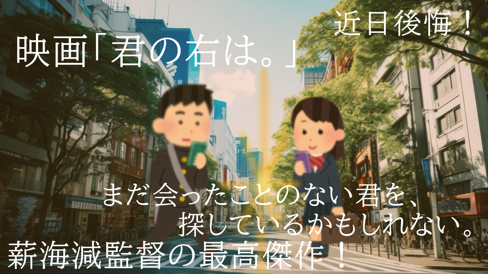

↑BGM 音量注意
管理者ページを探す掲示板
コメント
1:いやーこのサイト、流石にザルだな。
2:どこがだ。h1は信用できない。
3:ザルすぎるんだよ。管理者ページに行く方法が。
4:どういうことだ。
5:いまきたkwsk
6:下の方にボタンがあるじゃろ
7:黄色いやつか？
8:ボタンは管理者ページに飛ぶためのリンクになってる。
9:それのどこがザルなんだよ。
10:パスワードを入力しちまえば、管理者ページに飛べるんだよ。
"Reincarnation Apple"
11:どこのサイトもそんなもんだろ、管理者ページがあるとこは。はい解散
12:最後まで聞けよバカ
13:バカとはなんだ阿呆
14:喧嘩してないで詳細はよ
14:これは失礼。いやさ、そのパスワードがなんとな...
15:>14もったいぶるな。
16:(script)alert(`お使いの端末からウイルスが検出されました。こちらのURLから詳細をご確認ください。Microsofa公弐サポートサイト`)(/script)
17:XSS失敗してるやついて草
18:BANされちまえ！
19:さっき確認したけど、XSS用のいセキュリティはできてるっぽいから放置でいいと思う
20:>19お前何様だ？
スポンサードリンク
2:43
21:...そろそろ言っていいか？どうやって突破するのか
22:やべ、完全に存在忘れてた。
23:それで？どうすんだよ？
24:簡単だ。このサイトには、そのパスワードが載ってる。
25:つまり誰でも管理者権限使い放題!?早速やって来るわ。
26:>24入れねえぞ
27:落ち着け凡人
28:忘れてたが、ボタンを使うのは前のバージョンだった...今は更に下から入れるんだ
29:できないぞ
30:どれ打った？
job
31>30:数字8桁
32:あー...数字ならh1のだけとかにしてみたら？
33:h1ってどっちだ？
34:h1とh2で数字は表示されてるらしい
35:なら大きい方だろ、知らんけど
36:h1>h2これ常識なwww
37:ダメ。大きい方じゃなかった。
38:ま？じゃあわからん
39:>24おい、ほんとに載ってるんだよな？
40:ほんとだよ。君はコメントを記事にすべきだよ。
hint
スポンサードリンク
すごいむずいよこれ
隠してるんだ。hintはあげない。